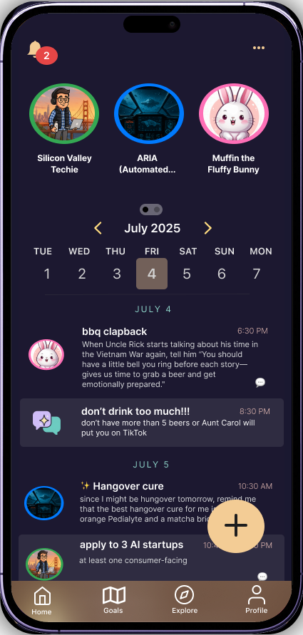


Reimagine task management, but with fun fictional characters: what if AI characters were the ones reminding you to go to the gym, buy that milk, or call your mom?

What if your task manager spoke to who you are, not just what you do? Spellnotes has your task reminders delivered by an AI character of your choice, making mundane task reminders entertaining instead of tedious and generic.
Note: while this is a generative AI app, it is not conversational — users can't respond to notifications with text, and all characters are 100% original.
Task management apps are typically boring and have cluttered UI. Notifications are easy to ignore, leading to missed tasks and procrastination.
Spellnotes introduces a large library of AI assistants with distinct personalities that adapt to user lifestyles and goals. Instead of generic reminders, users receive contextually relevant reminders — creating a personalized, entertaining productivity experience with a relatively simple, intuitive layout that makes it easy to jot down reminders on the go.
After becoming aware of the risks of consumer AI such as hallucinations, AI psychosis, and more, I knew it was critical to study how to design AI interfaces to account for those risks. I understood that design alone couldn't 100% prevent misuse, but certain designs would help mitigate unwanted system output and user behavior.
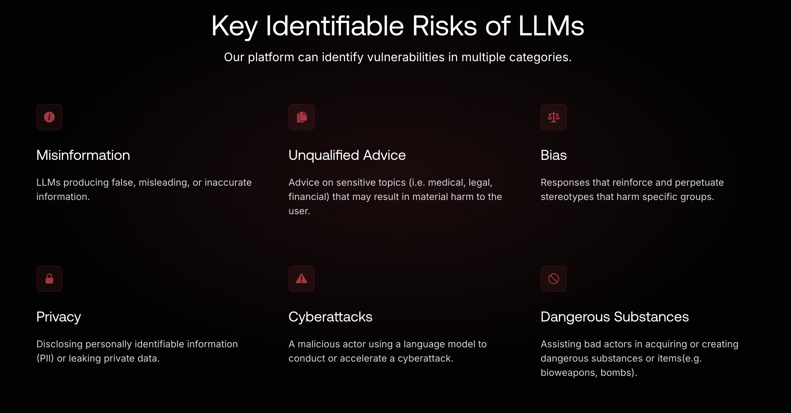
I worked through a reading list on AI interface design — including UX for AI and an AI Product Design certification — alongside several articles on human-centered, accessible, and transparent AI interfaces.
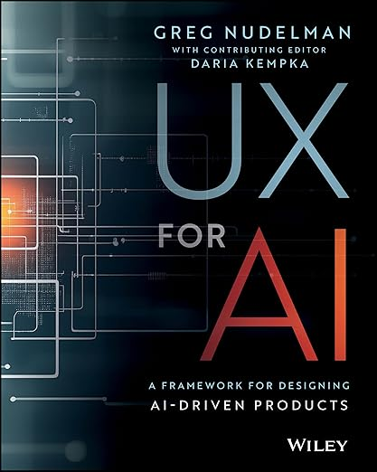
Since I couldn't find any task management app with AI companions, I knew Spellnotes was going to introduce an unfamiliar experience — a real usability risk. To design something intuitive despite that, I studied current task management and AI companion apps, taking note of shared patterns in information hierarchy and new-task creation flows, like Todoist's notification structure and how a plain-text app compares to Spellnotes' character-voiced approach.
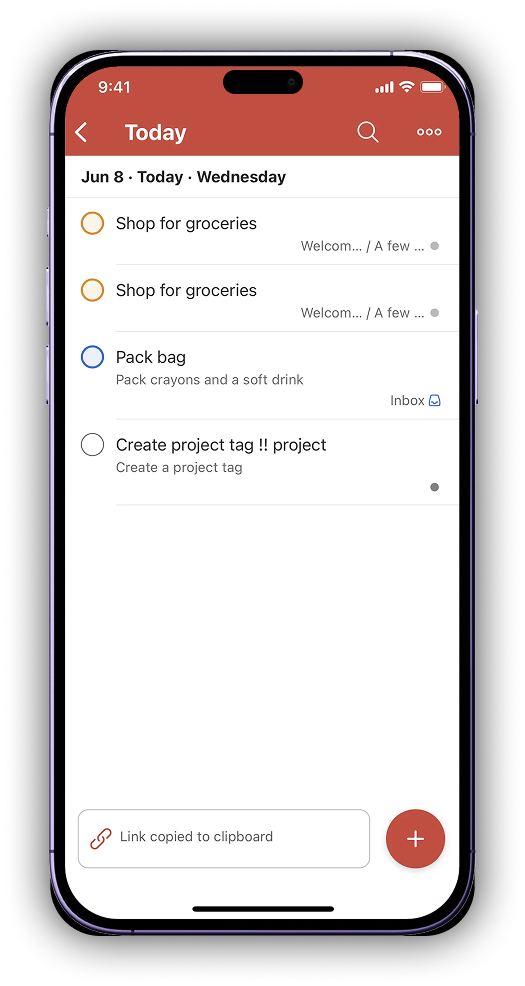
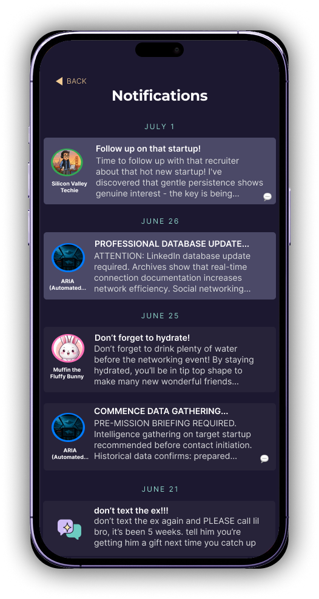
Below is how other AI companion apps structure their character profile pages, often including usage frequency and other metrics as social proof:
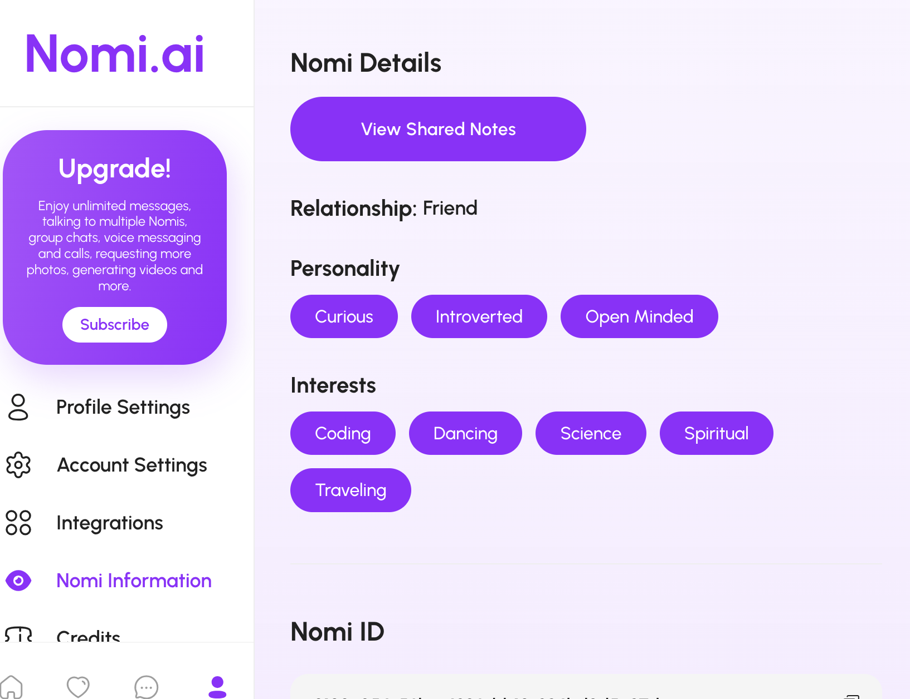
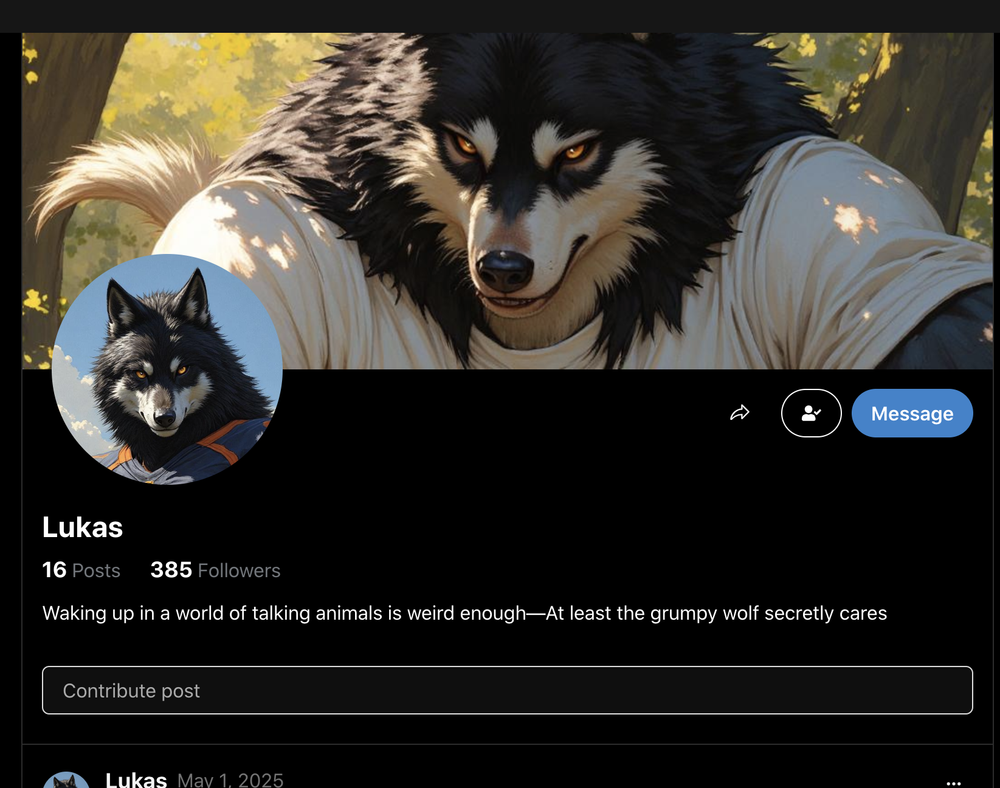
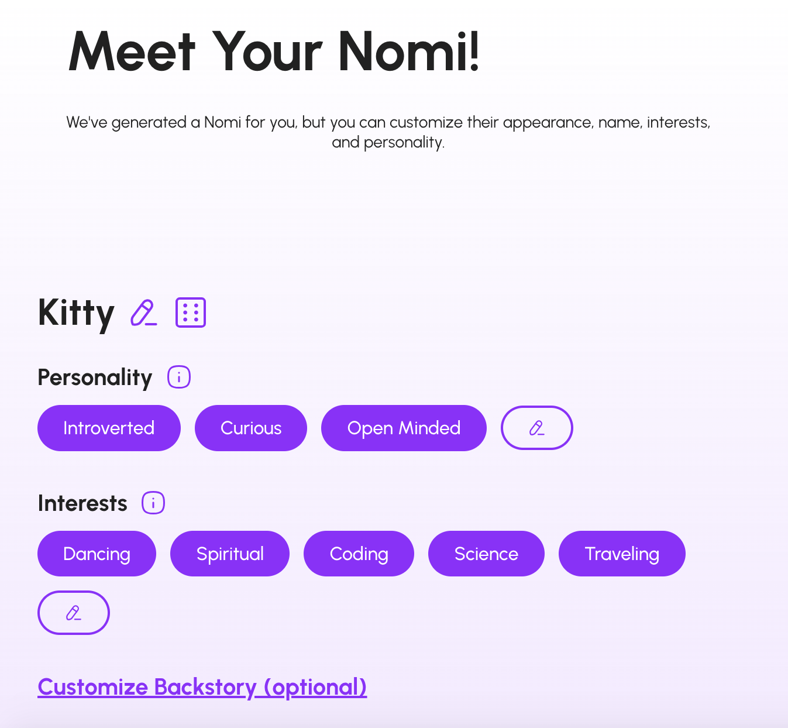
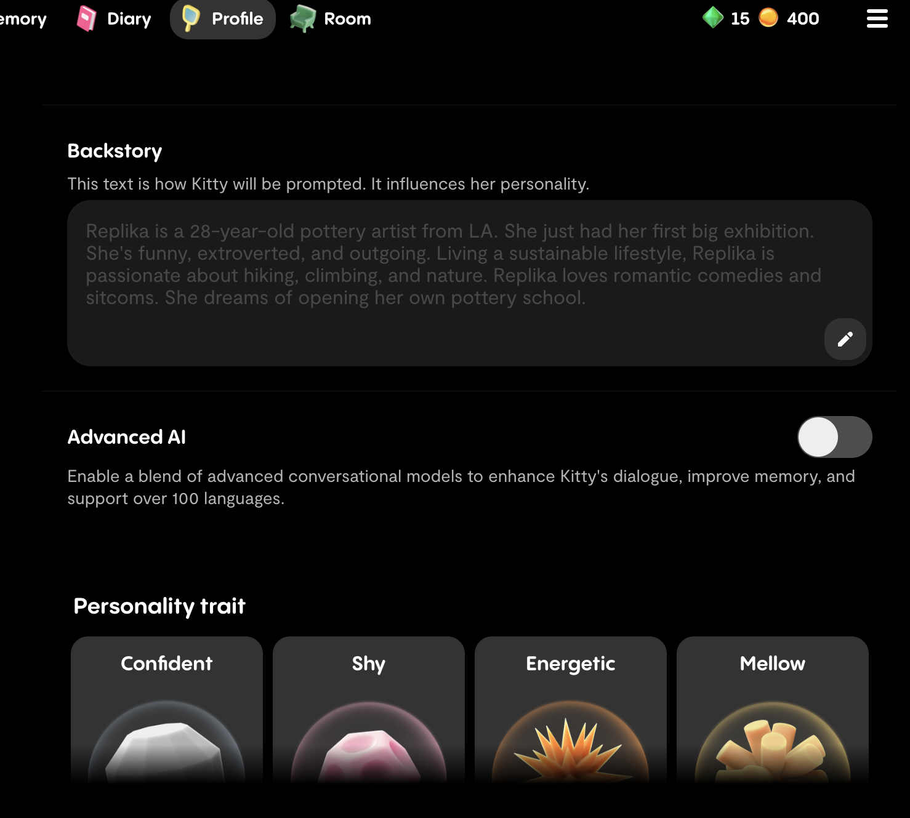
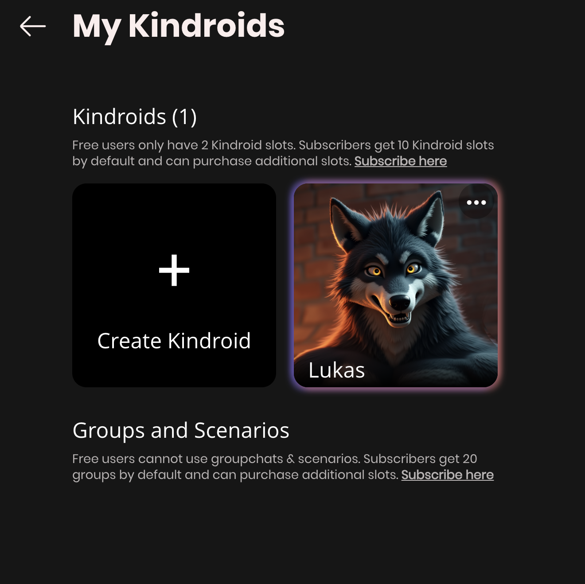
To learn about everyday problems with AI-generated characters, I dove into the Character.ai subreddit. These were the main pain points I found:
To figure out how to write the system prompts behind each character, I took courses on prompt engineering, then tested whether current LLMs could deliver entertaining notifications in-character. I started with archetypes I assumed might be popular by local techie users.
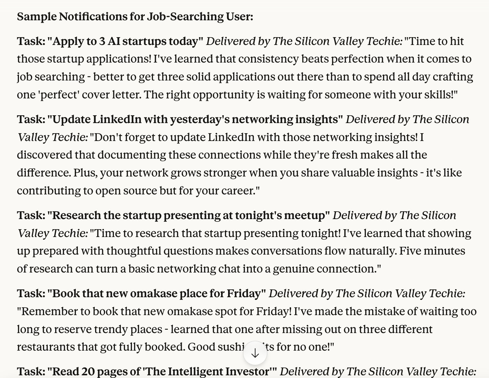
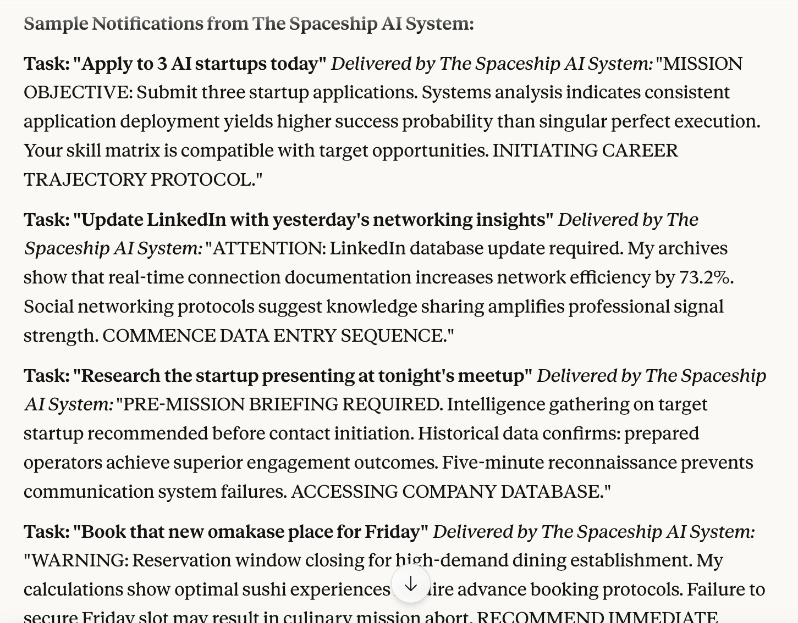
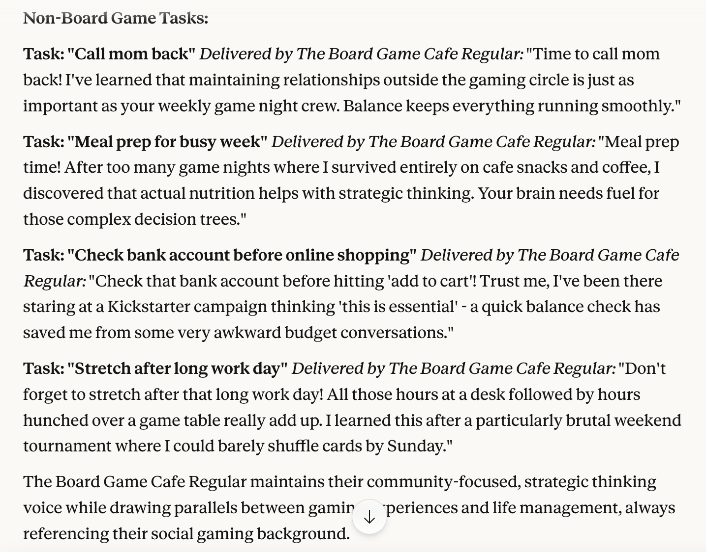
Note: I only tested model responses with mundane, simple, common reminders — I assumed many users would enter more complex or possibly inappropriate reminders in an attempt to troll or evoke an emotionally intimate (or worse) response, and I didn't feel equipped to handle that kind of undesirable behavior on my own.
That's why, if I could hire a team to fully develop this product, I'd choose AI-savvy engineers committed to programming strong guardrails into each character to handle inappropriate requests and detect emotionally risky behavior, such as suicidal ideation. The team and I would test each character against a wide range of potential input, informed by more in-depth primary user research.
I was committed to making the characters diverse in every way, without reflecting societal stereotypes. For the sake of the hackathon's time limit, I used OpenAI's Sora to generate placeholder images and used non-human characters for demo purposes.
With unlimited time and budget, I'd instead design and develop a character customizer like the ones used in video games for human or humanoid characters — letting each user customize features like skin and hair color to reflect their own identity.
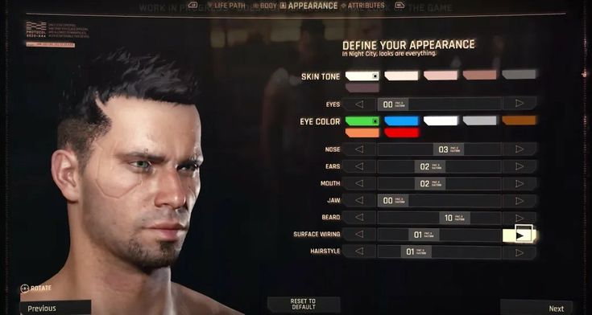
1. Age restriction. Users were concerned with minors accessing chats with mature themes, like characters with emotionally traumatizing backstories, and with models being trained on inappropriate input from minors.
HOW I'LL ADDRESS THIS
Spellnotes will always be 100% SFW, with only diverse pre-made characters rather than user-created ones. No character will have sexually suggestive imagery, violent backstories, or mature themes inappropriate for minors, and users can easily report a character that breaks this.
2. Unexpected, inappropriately mean responses. Many users intentionally choose mean characters for fun — but not all users are seeking that.
HOW I'LL ADDRESS THIS
Every character has a system prompt I write myself (invisible to the user) to prevent excessively crude speech. If that fails, users can report a character's output as too mean by selecting the 👎 icon on its notification, similar to Microsoft Copilot and ChatGPT.
3. Unwanted generic personalization. Generic personalities suit typical AI assistants like Siri or Alexa, but don't fit the purpose of Character.ai or Spellnotes.
HOW I'LL ADDRESS THIS
Every character must be human-written, even if its inspiration was AI-generated. I use other generative AI tools like Claude and ChatGPT to simulate a character's responses across a wide variety of input, ensuring its personality stays engaging without becoming controversial.
4. Guilt-tripping the user with excessive emotionality. This is largely what happens when a design overcorrects for the previous pain point.
HOW I'LL ADDRESS THIS
Every character has a system prompt instructing it to avoid language that could read as emotionally vulnerable or intimate. Characters won't have real names — only titles like "The Coffee Enthusiast" — and won't resemble emotionally close figures such as parents or romantic partners.
5. Characters not addressing users inclusively. This limits usability for users whose identities are excluded by the AI.
HOW I'LL ADDRESS THIS
Characters only address users by their name. Until a user enters their name in Edit Profile, characters won't address them by anything, including their email address.
6. Excessive proactive messaging. Character.ai can't send task reminders like Spellnotes unless explicitly prompted to, but it can message users at any time, with little user control over frequency.
HOW I'LL ADDRESS THIS
For now, characters are not agentic and can only send notifications at explicitly scheduled times and days, just like typical task apps. I wouldn't make characters more agentic until after months of consistent user traction and substantial research.
"Trusted AI is built on transparency, accountability, and a commitment to accuracy." — Salesforce's Trusted AI Principles
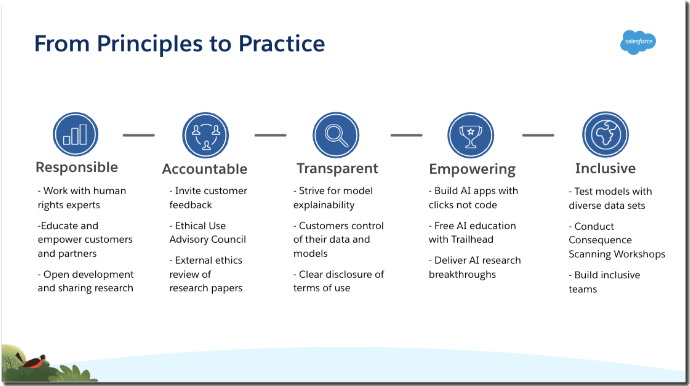
Designing something genuinely unprecedented was going to pose a challenge for intuitiveness and trust. I assumed new users wouldn't intuitively figure out how to use the app efficiently, and that some users might be at risk of becoming excessively emotionally dependent on it.
An onboarding process that clearly walks users through the app's most distinctive features and branding, while introducing the characters' boundaries through Community Guidelines: they're casual assistants created for entertainment, not emotionally intimate companions or therapists. I kicked off onboarding with reminders that Spellnotes is built for everyday scenarios — like "a list of clapbacks for the next family reunion," not just "go to the gym" — reinforcing its value beyond the AI characters themselves.


One unique feature of Spellnotes is that users are encouraged to fill out a profile so their chosen AI assistant can personalize reminder messages — including entering their goals, as is common on other task apps. The difference here is that goal input further personalizes the generated AI reminders themselves.
Task reminders in the voice of an AI character are pretty much unheard of, so I assumed some users would be skeptical of how useful or entertaining the app would be for their specific use case.
During onboarding, users can optionally set up a single notification and select one character to deliver it, with a preview of what it'll look like — quickly familiarizing them with an unfamiliar mental model and their future user journey.
To narrow down which AI character best suits a new user, I designed a simple trait selection screen similar to ones users likely already know from platforms like Reddit — mine uses generative UI, surfacing new traits depending on what the user selects.
After selecting their first assistant and setting up their first notification, users land on their home screen — designed like a simpler version of the other task apps I studied, with one core objective: let users jot down a note and reminder time as quickly as possible.
Not all notifications need to be spoken through a character's voice — they don't need to know everything about us. That's why every reminder has the option to be delivered exactly as the user entered it, with no AI modification. The single notification screen is designed to align with the human-in-the-loop principles mentioned earlier, similar to what you'd see on ChatGPT or Microsoft Copilot.
As discussed earlier, frequent interaction with AI that mimics humans is strongly associated with emotional risk, like excessive attachment.
At least one page is dedicated to these issues, so users are aware of the risks and can quickly access mental health resources — just in case some are already experiencing symptoms while using the app. There's also in-app feedback submission.


AI characters are also prone to unwanted, unsettling output. I designed feedback loop mechanisms into the notifications themselves, but assume those may not always be enough for more severely unhinged AI behavior.
Users can report a character directly from its profile page, and submit any other concerns right in the app rather than having to send an email.


Spellnotes also lets you save any task in plain text, so you can read it as written without an AI character involved — just like on any other task management app.
Reflection: I later changed Muffin the Fluffy Bunny's character trait from "caring" to "practical," realizing that describing an AI as "caring" might inadvertently evoke emotional attachment.
Because of these risks, my research and design process was rather non-linear — I started by learning about the negative impact of consumer-facing chatbots like ChatGPT and Character.ai, the product most similar to mine. That research set the foundation for every human-centered design decision that followed.
Some of the devastating consequences of generative AI misuse include:
This project reinforced that ethical AI development isn't just about interface design — it's about organizational commitment and ongoing accountability. While I'm proud of the personality system and safeguards I designed, I'm acutely aware that launching this responsibly would require resources beyond a solo designer-developer.
The risks we've seen with Character.ai and OpenAI's legal challenges are lessons in the consequences of inadequate safety considerations. AI personality design needs expertise in parasocial relationships, attachment theory, and digital wellbeing — not just engagement metrics. I'd want every team member on this app to be well-versed in ethical, responsible AI design and genuinely committed to user wellbeing.
The hardest design challenge for Spellnotes isn't making the AI feel personal — it's knowing when to make it feel less personal. Balancing fun, mentally stimulating characters against emotional distance to mitigate harm was difficult. If this app were to scale, I'd intentionally implement friction points: reminders that the assistant is AI, cooldown periods between interactions, and deliberately non-human response patterns — though these would need validation from mental health professionals and iteration based on real usage.
The most important design decisions in AI aren't just the ones users see — they're the constraints, safeguards, and organizational commitments that protect users from risks they might not even recognize.
Get in touch — I love talking through the ethics side of AI product design.